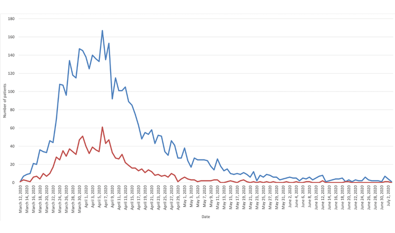
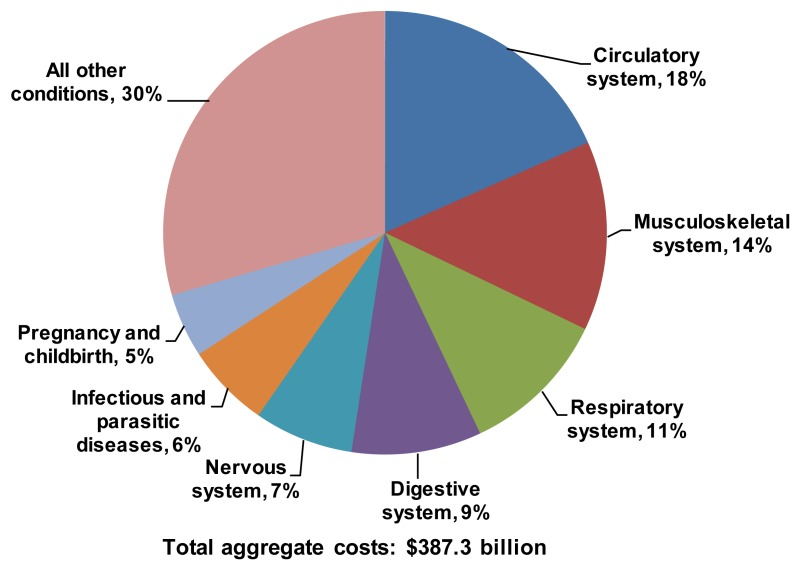

Hello, (Patient Name)
Doctor Details
Gynecology & Obstetrics
Med-Care D.Lab & Consultation Center
Orthopedic Surgery
Med-Care D.Lab & Consultation Center
GENERAL SURGERY
Med-Care D.Lab & Consultation Center
Neurology
Med-Care D.Lab & Consultation Center
Dental Unit
Med-Care D.Lab & Consultation Center
Medicine
Med-Care D.Lab & Consultation Center
Patients Statistics
A graph that shows the number of patients who were admitted to the hospital(ie, blue line; number of cases per day) and the number of patients who Discharged (ie, red line; number of Discharged per day). Data were collected from March 1 to July 3, 2024
Total Expense
Hospital Services
- Cardiology & Vascular Services
- Radiology & Medical Imaging
- Laboratory Services
- Diabetes center
- Pain and Physiotherapy Center
- Dental Center
The hospital is providing cardiology services by 2 modern cath-lab and round the clock CCU facility including cardiac surgery (Adult & Pediatric) by 2 cardiac OT by renowned cardiologists and cardiac surgeons. This hospital has its own stoke units with DSA and stanting with coiling facility. Vascular surgery with PAG, Stenting and Laser services is another service of this hospital.
We loves to take challenge to diagnosis the disease and offering treatment to the patient. We offer the best Radiology and imaging services to the patient with industry latest 3 Tesla MRI, Acquisition, Multi slice CT Scan, Digital 100 msH X Ray 4D Ultrasonography and others. We are the pioneer in 1.5 Tesla MRI and 128 Slice CT scan in Bangladesh. A group of well educated experienced consultants with European and North American degrees are working hard to verify the reports.
Our Laboratory having a state of art technology for medical diagnostic laboratory which included Aptio Automation, Orthoclinical Diagnostics & Dia Sorin system for Biochemistry & Immunology. Also, have Sebia electrophoresis (capillary), Biorad HPLC base HbA1c analyzer & Allergy Analyzer (64 allergens). Molecular Diagnostics using Gene Xpert, Rotor-Gene Q (Qiagen), CFx96 (BioRad), AMPLIlab (Adaltis) and Molbio System for PCR base diagnosis.
Diabetes (diabetes mellitus) is classed as a metabolism disorder. Metabolism refers to the way our bodies use digested food for energy and growth.
Pain is a protective symptom. It leads a patient to take medication and treatment. Our pain center is dedicated to care your pain and keeping you in comfort. We have renowned doctors, physiotherapists and world-class instruments for pain management and rehabilitation of the patients. We love to address all sort of pain and offer quality services to make our patients happy and smile. You are welcome to visit our pain and physiotherapy center.
Our Med-Care Specialized in Dental Centre is a Centre of excellence where advanced services are rendered by a group of experienced renowned professors and consultants. Here we serve the patient's world-class treatment in different subspecialty like oral and maxillofacial surgery, Conservates & Cosmetic Dentistry & general dentistry by both male and female dental surgeons through modern equipment’s and advanced materials with reasonable price
Patient Management
| ID | Name | Contact | Admit Date | Type | Status |
|---|---|---|---|---|---|
| 001 | Shamim Ahmed | +880 123-456-7890 | 2024-04-07 | Inpatient | Admitted |
| 002 | Faria Sultana | +880 987-654-3210 | 2024-04-08 | Outpatient | Discharged |
| 003 | Arif Mahmud | +880 135-766-7253 | 2024-04-17 | Emergency | In Treatment |
| 004 | Sirin Alom | +880 535-671-7157 | 2024-04-29 | Emergency | In Treatment |
| 005 | Lamia Islam | +880 153-476-2560 | 2024-05-09 | Inpatient | Admitted |
Schedule
- Oral Maxillofacial Surgery 10 AM - 1 PM DR. Nishat Tasnim
- Nephrologey 10 AM - 1 PM Dr. Saif Bin Mizan
- Colorectal Surgery 6:00 PM - 9:00 PM Dr. Md. Rezwan Shah
- Ortho-Surgery 5.00PM -9.00 PM Dr. Wakil Ahmed